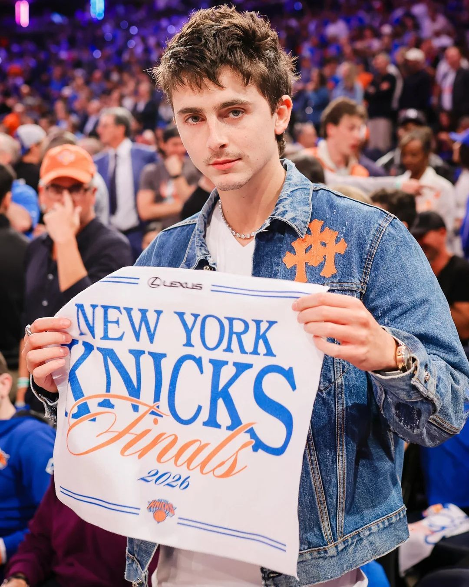

Prince Harry, Timothée Chalamet y más celebs festejan el campeonato de los Knicks
Los New York Knicks ganaron su primer campeonato de la NBA en 53 años con una victoria en el Juego 5 ante los San Antonio Spurs por 94 a 90, y las celebridades que estaban en el Madison Square Garden no pudieron contenerse.
Entre los famosos presentes estuvieron el Príncipe Harry, Timothée Chalamet, Ben Stiller, Tracy Morgan y Sydney Sweeney, quien lució una remera personalizada de los Knicks junto a un reloj Cartier vintage.
Chalamet, fanático de los Knicks de toda la vida y oriundo de Nueva York, bajó a la cancha apenas terminó el partido para festejar junto al centro estrella Karl-Anthony Towns. "Prefiero esto mil veces antes que los Oscars, vamos baby. ¡Los Knicks son campeones!", declaró el actor, nominado cuatro veces al Oscar.
El Príncipe Harry también fue captado en un momento viral intentando saludar a Spike Lee, quien lo ignoró olímpicamente. Una noche histórica para Nueva York.
Fuente: Page Six